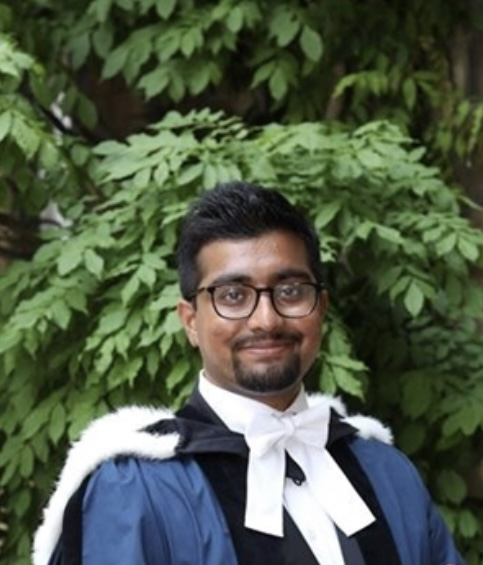
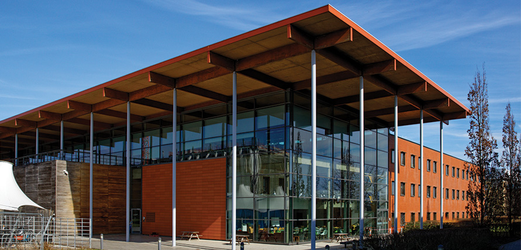

-

I am a PhD Candidate in Computer Science at the University of Cambridge (Gonville & Caius College), researching Machine Learning and Natural Language Processing and supervised by Professor Paula Buttery. I specialise in Machine Learning and Natural Language Processing. I am interested in developing cognitively-inspired computational systems, including alternatives to Transformer-based Large Language Models. I previously completed my Bachelor of Arts and Masters in Engineering in Computer Science and Linguistics at Gonville & Caius College, University of Cambridge, where I obtained a Starred First (Class I with Distinction) and a Distinction (also equivalent to a starred First) respectively. My research focuses on Small-Scale Language Models to improve the interpretability of Foundation Models.
My research primarily is concerned with engineering more cognitively plausible Foundation Models. This is an emerging research paradigm that attempts to improve the cognitive capabilities of state-of-the-art computational systems within a cognitively plausible environment. I have interests in Machine Learning Systems, the Theory of Deep Learning, and Theoretical Linguistics. My ambition is to develop data-efficient Machine Learning systems that draw on human cognition.
To this end, I'm particularly interested in developing novel machine learning techniques to build scalable neural architectures that draw on formal methods (e.g., category and type theory) utilised in theoretical formalisms in Cognitive Science.
Computer Science PhD at
University of Cambridge

- Natural Language Processing
- Machine Learning
-
Research: Small Language Models
The main focus of my PhD is engineering small-scale Foundation Models, with a focus on domain-specific tasks. My research currently focuses on building small-scale Transformer-based language models. I have engineered curriculum learning (CL) strategies inspired by cutting-edge Language Acquisition frameworks.
Learn more about Cambridge Small Language Models
If you are interested in getting in touch about this, please email me!
Machine Learning
I have worked with Multimodal Vision-Language Models in the Language Technology Lab with Prof Nigel Collier and Fangyu Liu (now Google DeepMind). Previously, I've probed vision-language models, exploring the semantic representations of CLIP. I have worked on Nearest Neighbour Algorithms for Offline Imitation Learning (IL). I have also worked on Explainable AI and Argumentation Mining, and Shortcut Learning in Natural Language Inference.
Cognitive Science and Theoretical Linguistics
My theoretical linguistics interests work against the background assumptions of neo-emergentist approaches, which assume a minimally endowed (genetic) component of the grammar and situate the burden of acquisition to the learner. Within this approach, I am concerned by questions of Learnability and look to formalise approaches that draw on Dynamical Systems Theory. I am keen to explore the potential relevance of information-theoretic approaches to acquisition and to explore syntax-phonology interface phenomena. I have worked as a Research Assistant for a small project on corpus-based studies of code-switching with Dr Li Nguyen.
Publications
-
Less is More: Pre-Training Cross-Lingual Small-Scale Language Models with Cognitively-Plausible Curriculum Learning Strategies
BabyLM Challenge 2024 (Accepted, Poster)
2024
Authors: Suchir Salhan, Richard Diehl-Martinez, Zebulon Goriely, Paula Buttery
This publication introduces Small-Scale Language Models (SSLMs) trained on developmentally plausible corpora. It explores cognitive curriculum learning strategies that provide insights into syntactic learning across different languages. Cognitively-Inspired Small-Scale Language Models (SSLMs) have been developed for four typologically distant language families: Romance (including French, Spanish, and Portuguese), Germanic (German and Dutch), Japanese, and Chinese, all trained on developmentally plausible corpora. Initial experiments with these SSLMs assessed the advantages of training a Transformer-based Language Model on a developmentally appropriate quantity of Child-Directed Speech (CDS). These experiments demonstrated that training SSLMs on CDS provides benefits beyond English, enabling the acquisition of grammatical knowledge comparable to that of pre-trained RoBERTa models, despite using approximately 25 times fewer parameters and 6,000 times fewer words. Furthermore, a Monolingual Age-Ordered framework, referred to as Curriculum Learning for Infant-Inspired Model Building (MAO-CLIMB), was introduced as a family of more "cognitively plausible" alternatives to BabyBERTa-style SSLMs. MAO-CLIMB incorporates three novel objective curricula, inspired by cutting-edge Chomskyan theories of language acquisition. The findings revealed that Transformer-based SSLMs do not adhere strictly to ordered developmental sequences, resulting in a mixed benefit of curriculum learning strategies. However, these strategies can sometimes outperform larger language models on certain syntactic benchmarks, particularly in Japanese. The study discusses the implications of these findings for constructing and evaluating cognitively plausible SSLMs beyond English.
-
LLMs “off-the-shelf” or Pretrain-from-Scratch? Recalibrating Biases and Improving Transparency using Small-Scale Language Models
Learning & Human Intelligence Group
2024
Authors: Suchir Salhan, Richard Diehl-Martinez, Zebulon Goriely, Andrew Caines, Paula Buttery
On the Potential for Maximising Minimal Means in Transformer Language Models: A Dynamical Systems Perspective
Cambridge Occasional Papers in Linguistics
2023
Author: Suchir Salhan
Computational linguists can utilise the insights of neo-emergent linguistic models, an approach to grammar construction that relies heavily on domain-general inductive biases, to address extant challenges associated with the syntactic and typological capabilities of state-of-the-art Transformer-based Language Models (LMs), which underpin systems like Google Translate and ChatGPT. I offer a synthesis of the inductive biases of Transformer-based LMs that are reminiscent of Dynamical Systems Theory (DST) approaches in human cognition. In doing so, I put forward a research agenda that will strengthen the case for minimalism in deep learning.
-
© Suchir Salhan 2024